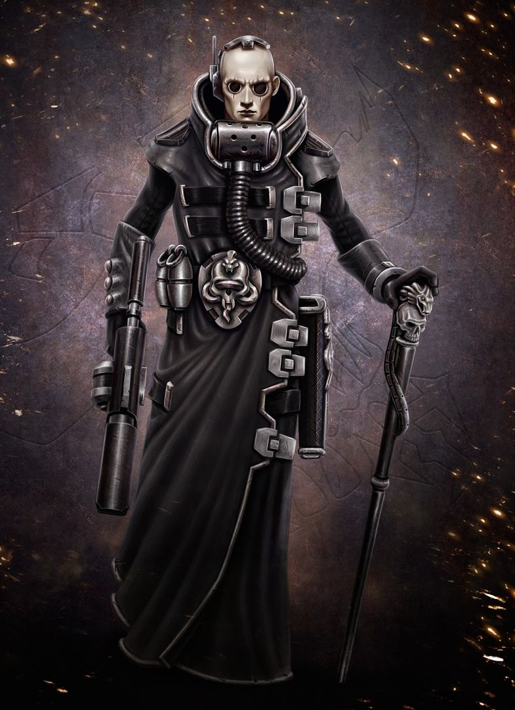

Он является студентом Московского Политехнического университета из группы 211-326
У Вани нет идей, что конкретно писать на данной странице. Поэтому здесь будет кусок текста из правил настольного скримиш-варгейма "Necromunda Underhive", связанного с лором вселенной Вархамер 40 000
Надеюсь на ваше понимание. Не бейте :3
В таких местах люди плодятся без всякого контроля, заполняя и без того кишащие жителями города-ульи...
В таких местах люди плодятся без всякого контроля, заполняя и без того кишащие жителями города-ульи. Даже здесь напора человечества недостаточно, чтобы отречь безумие или отразить нападки сил хаоса, ереси и смерти. Жизнь
ничего не стоят, а пуля и гранаты –короли мира. Ни день, ни ночь не качаются миллиарды душ, заточенных в этих кошмарных мирах. Для них существует только немигающий септический полумрак древнего флуоресцентного света. Удушающая атмосфера
подулья пропитана темной патиной веков. Коричневая дымка насыщает переработанный миллиарды раз воздух и годится только на то чтобы не дать жителям задохнуться окончательно.
А теперь, Ваня расскажет, какие есть 6 основных играбельных Домов (фракций) данного мира-улья, которые хорошо подойдут новичкам:
Я СДЕЛАЛЬ ЭТУ СТРОЧКУ, ИБО НЕ ВЕДАЮ, ЧТО ТВОРЮ!,!,!,!,!,!,,....
Дом Орлок
Шахтеры и косплееры Безумного макса
Дом Делакью
Скрытные и загадочные Глубоководные, торгующие информацией 